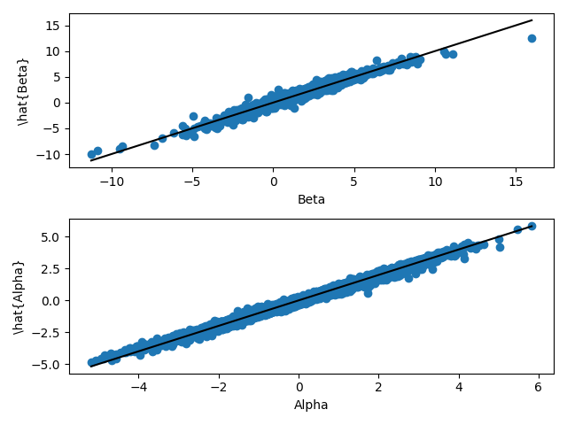

Simulation in Python
Install PyTorch and matplotlib. Then:
import torch import matplotlib.pyplot as plt torch.manual_seed(3005) # In practice, this seed may not be enough to get reproducible results.
Simulate data from the generating process:
n, dimension_x, dimension_theta = 10000, 5, 2 x = torch.randn(n, dimension_x) # model parameters: theta = (alpha, beta) alpha = 1/5 * x[:, 0] - 4/3 * x[:, 1] - 1/2 * x[:, 2] beta = 2 - x[:, 1] + 1/4 * x[:, 0] ** 3 treatment = 1 * (torch.randn(n) > 0) epsilon = torch.randn(n) y = alpha + beta * treatment + epsilon
Visualize parameters:
fig, ax = plt.subplots(nrows = 3, ncols = 1) ax[0].scatter(x[:, 1], alpha) ax[0].set_title("Alpha") ax[1].scatter(x[:, 0], beta) ax[1].set_title("Beta") ax[2].scatter(treatment, y) ax[2].set_title("Outcome") fig.tight_layout()

Estimate parameters using a multi-layer perceptron (MLP):
# Define MLP for estimating parameters model = torch.nn.Sequential( torch.nn.Linear(dimension_x, 20), torch.nn.ReLU(), torch.nn.Linear(20, 20), torch.nn.ReLU(), torch.nn.Linear(20, dimension_theta) ) optimizer = torch.optim.Adam(model.parameters()) mse_loss = torch.nn.MSELoss() # Estimate parameters model.train() # set model to training mode for epoch in range(5000): # Calculate loss function theta = model(x) pred = theta[:, 0] + theta[:, 1] * treatment loss = mse_loss(pred, y) # Backpropagation optimizer.zero_grad() loss.backward() optimizer.step() if epoch % 100 == 0: print(f"Train Loss: {loss.item(): >8f}") message = f"Train Loss: {loss.item(): >8f}" message
Train Loss: 0.942023
Plot estimates:
alpha_hat, beta_hat = theta[:, 0].detach().numpy(), theta[:, 1].detach().numpy() alpha_true, beta_true = alpha.detach().numpy(), beta.detach().numpy() fig, ax = plt.subplots(nrows = 2, ncols = 1) ax[0].scatter(beta_true, beta_hat) ax[0].plot([beta_true.min(), beta_true.max()], [beta_true.min(), beta_true.max()], color = "black") ax[0].set_xlabel("Beta") ax[0].set_ylabel("\hat{Beta}") ax[1].scatter(alpha_true, alpha_hat) ax[1].plot([alpha_true.min(), alpha_true.max()], [alpha_true.min(), alpha_true.max()], color = "black") ax[1].set_xlabel("Alpha") ax[1].set_ylabel("\hat{Alpha}") fig.tight_layout()

Inference requires a few components: derivative of loss function, hessian of the loss function, and the derivative of a smooth function of interest. First, calculate the gradient of the loss function with respect to the structural model parameters:
theta = model(x) theta.retain_grad() pred = theta[:, 0] + theta[:, 1] * treatment # Manual calculation of derivative of loss function wrt alpha and beta, evaluated at each x gradient_manual = torch.cat( ( (-2*(y - pred)).reshape(n, 1), # (del loss / del alpha)(x_i) (-2*treatment*(y - pred)).reshape(n, 1) # (del loss / del beta)(x_i) ), dim = 1 ) # Notice that theta is evaluated for each x_i, in fact we have theta(x_i) # But now we want the derivative of loss_i wrt to alpha and beta loss = torch.nn.MSELoss(reduction = "none")(pred, y).sum() # sum across all x_i # Derivative of the sum wrt to each theta_i, line by line gradient_auto = torch.autograd.grad(loss, theta, create_graph = True, retain_graph = True)[0] # Check if calculations match assert (gradient_manual == gradient_auto).all().item() gradient_auto
tensor([[ 2.3064, 2.3064],
[ 0.4651, 0.4651],
[-1.5842, 0.0000],
...,
[-1.1026, 0.0000],
[ 1.0910, 0.0000],
[ 1.9622, 1.9622]], grad_fn=<AddBackward0>)
Second, calculate hessian of the loss function:
# Manual calculation hessian_manual = torch.zeros(dimension_theta, dimension_theta) hessian_manual[0, 0] = 2.0 hessian_manual[0, 1] = (2.0 * treatment).mean() hessian_manual[1, 0] = (2.0 * treatment).mean() hessian_manual[1, 1] = (2.0 * treatment ** 2.0).mean() # Automatic differentiation hessian_auto = torch.zeros(dimension_theta, dimension_theta) # Derivative of the "derivative of the loss function wrt to theta_1" with respect to each theta_i hessian_auto[0, :] = torch.autograd.grad(gradient_auto.sum(0)[0], theta, create_graph = True, retain_graph = True)[0].mean(0) # Derivative of the "derivative of the loss function wrt to theta_2" with respect to each theta_i hessian_auto[1, :] = torch.autograd.grad(gradient_auto.sum(0)[1], theta, create_graph = True, retain_graph = True)[0].mean(0) # Check if calculations match assert (hessian_manual == hessian_auto).all().item() hessian_auto
tensor([[2.0000, 0.9960],
[0.9960, 0.9960]])
Third, calculate the derivative of the smooth function of interest, here called “H”:
# Inference on average treatement effect, mu = E[H(...)] = E[beta(x)|X=x] H = theta[:, 1] H_gradient = torch.autograd.grad(H.sum(), theta, create_graph = True, retain_graph = True)[0] H_gradient
tensor([[0., 1.],
[0., 1.],
[0., 1.],
...,
[0., 1.],
[0., 1.],
[0., 1.]])
Combine all the objects above to estimate the influence function:
# Invert Hessian lambda_inverse = torch.linalg.solve(hessian_auto, torch.eye(dimension_theta)) # Calculate influence function adjustment = H_gradient.mm(lambda_inverse).mm(gradient_auto.T).diag() psi = H - adjustment psi
tensor([ 2.0588, 1.7368, 1.2047, ..., 0.4347, 2.2069, -2.0778],
grad_fn=<SubBackward0>)
Create confidence interval (CI) using the influence function:
# Components of CLT mu_hat = psi.mean().item() mu_std = ((psi.var()/n)**0.5).item() CI = [mu_hat - 1.96 * mu_std, mu_hat + 1.96 * mu_std] # Compare to doubly robust (dr) analytical formula treat = 1.0 * treatment psi_dr = theta[:, 1] + \ treat * ((pred - theta[:, 1]) / treat.mean()) - \ (1 - treat) * ((pred - theta[:, 0]) / (1 - treat.mean())) dr_mu_hat = psi_dr.mean().item() dr_mu_std = ((psi.var()/n)**0.5).item() CI_dr = [dr_mu_hat - 1.96 * dr_mu_std, dr_mu_hat + 1.96 * dr_mu_std] # Print comparison comparison = f""" True ATE: {beta.mean().item()}\n Automatic CI: {CI}\n Doubly Robust CI: {CI_dr} """ comparison
True ATE: 1.978830099105835 Automatic CI: [1.9469640757888556, 2.0408777687698603] Doubly Robust CI: [1.9374205376952887, 2.0313342306762934]